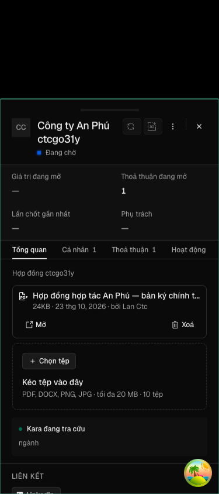
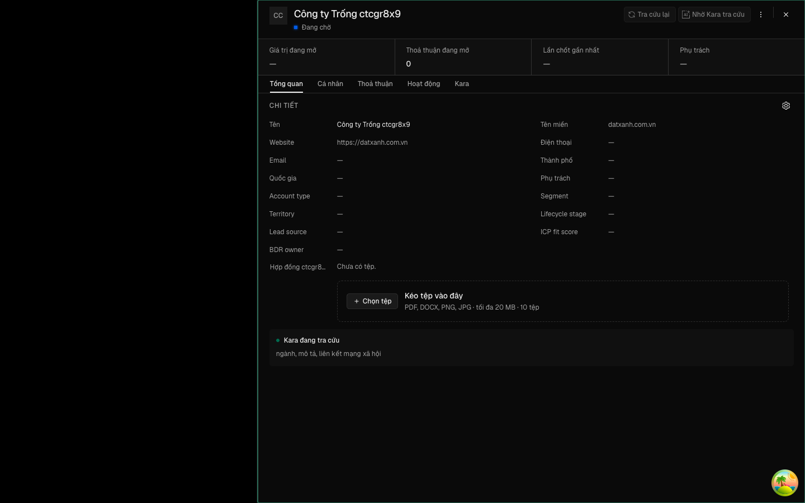
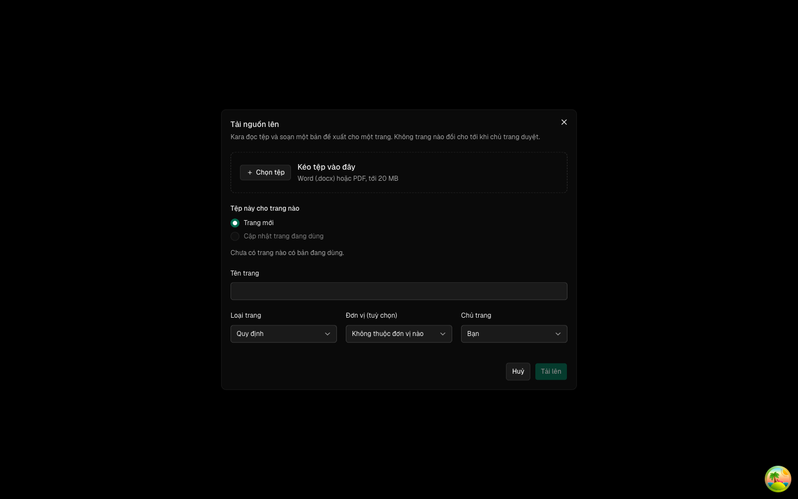

Rà soát 23/10 mọi màn có đính kèm tệp: chỉ phiếu Công ty hẹp — tab Tổng quan xếp toàn bộ mục Chi tiết vào cột phải 320px, ô Tệp còn khoảng 152px ở màn 1440, chữ vùng kéo thả xuống mỗi dòng một chữ. Phiếu Liên hệ và Thoả thuận đã trải Chi tiết hai cột, ô Tệp chiếm trọn hàng (~810px). Vòng này đưa phiếu Công ty về cùng khung, và sửa vùng kéo thả dùng chung để phần chữ rơi xuống dưới nút khi hẹp (gặp ở cả ba phiếu trên điện thoại). Hạng T2: chạm apps/app và packages/ui, không chạm API, cơ sở dữ liệu hay đường T3.
docs/superpowers/specs/2026-10-23-chi-tiet-cong-ty-hai-cot-design.md
| Eval | Tiêu chí | Loại | Verdict | run_id | verified_at |
|---|---|---|---|---|---|
| E1 | AC-1 | ui-check | PASS | minted-chi-tiet-cong-ty-hai-cot-E1-r1 | 2026-10-23T03:58:15Z |
| E2 | AC-2 | ui-check | PASS | minted-chi-tiet-cong-ty-hai-cot-E2-r1 | 2026-10-23T03:58:15Z |
| E3 | AC-3 | ui-check | PASS | minted-chi-tiet-cong-ty-hai-cot-E3-r1 | 2026-10-23T03:58:15Z |
| E4 | AC-4 | ui-check | PASS | minted-chi-tiet-cong-ty-hai-cot-E4-r1 | 2026-10-23T03:58:15Z |
| E5 | AC-5 | ui-check | PASS | minted-chi-tiet-cong-ty-hai-cot-E5-r1 | 2026-10-23T03:58:15Z |
| E6 | AC-6 | ui-check | PASS | minted-chi-tiet-cong-ty-hai-cot-E6-r1 | 2026-10-23T03:58:15Z |
| E8 | AC-7 | ui-check | PASS | minted-chi-tiet-cong-ty-hai-cot-E8-r1 | 2026-10-23T03:58:15Z |
| E7 | AC-1 | script | PASS | minted-chi-tiet-cong-ty-hai-cot-E7-r1 | 2026-10-23T03:58:15Z |
AC-1: Given một công ty có mô tả và một trường Tệp đang có một tệp, When mở ngăn công ty ở tab Tổng quan ở khổ 1440
Frame da luu: E1-step1.png (sao tu ctc-cong-ty-1440.png), E1-step2.png (sao tu ctc-cong-ty-768.png). Cac frame khac cung lan: ctc-o-tep-1440, ctc-keo-tha-*-375, ctc-lien-he-1440, ctc-thoa-thuan-1440, ctc-cong-ty-trong-1440, ctc-tai-lieu-1440. Network: driver la puppeteer trong script, khong co duong doc network trong phien nay, khong ghi E1-network.txt. Luu y: thu muc evidence dung chung nen mot lan chay song song cua eval khac da ghi de ctc-cong-ty-1440.png luc 11:17; bo cuc giong het va so do 1440 cua lan nay lay tu log.
AC-2: Given công ty ấy, When nhìn ô Tệp ở khổ 1440, Then ô Tệp chiếm trọn một hàng của mục Chi tiết (vùng giá trị rộng
Frame saved: evidence/E2-step1.png (copy of the script's own ctc-o-tep-1440.png, same directory). Network: the driver is a script (puppeteer via do-bo-cuc.mjs) with no network-reading tool available, so E2-network.txt was not written.
AC-3: Given ngăn công ty, ngăn liên hệ và ngăn thoả thuận, mỗi bản ghi có một trường Tệp, When mở ở khổ 375, Then
Cac buoc khac cua cung lan chay cung dat: buoc 1, 2, 4 (207 phan tu, tran 0), 5, 6, 7. Frame luu (ban sao tu anh do-bo-cuc ghi, mtime 11:18): evidence/E3-step1.png (cong ty), E3-step2.png (lien he), E3-step3.png (thoa thuan); goc: ctc-keo-tha-cong-ty-375.png, ctc-keo-tha-lien-he-375.png, ctc-keo-tha-thoa-thuan-375.png cung thu muc. Network: driver la script puppeteer, khong doc duoc network qua tool; khong ghi E3-network.txt. Chieu do tren ban sao (E7, --chi-do) khong thuoc pham vi lan chay nay.
AC-4: Given ngăn công ty có tệp, When mở ở khổ 375, Then trang không cuộn ngang và không phần tử nào trong ngăn tràn

Cac buoc 1,2,3,5,6,7 cung dat (ngoai pham vi E4, chi ghi nhan). Frame: buoc 4 trong steps khong co lenh chup nen script khong sinh anh rieng cho buoc 4. E4-step1.png la ban sao cua ctc-keo-tha-cong-ty-375.png (ngan cong ty o 375, chup o buoc 3 cung luot) de lam bang chung hinh anh ngu canh; so lieu buoc 4 la tu log, khong tu anh. Cac tep da luu: E4-step1.png, E4-run.txt, E4-network.txt (trong thu muc evidence). Network: driver la puppeteer script, khong co tool doc network (n-a (driver)).
AC-5: Given ngăn liên hệ và ngăn thoả thuận có tệp, When mở ở khổ 1440, Then bố cục giữ như hôm nay: Chi tiết hai cột,
Frames da luu: E5-step1.png (copy cua ctc-lien-he-1440.png), E5-step2.png (copy cua ctc-thoa-thuan-1440.png), cung ctc-lien-he-1440.png, ctc-thoa-thuan-1440.png, trong thu muc evidence. Network: E5-network.txt ghi 'n-a (driver)' (script puppeteer, khong co duong doc network cho verifier). Khong chay chieu do (7) vi la viec cua E7.
AC-6: Given một công ty chưa có mô tả và Kara chưa điền xong các trường, When mở ngăn ở khổ 1440, Then không có mục

Tên gốc script ghi: evidence/ctc-cong-ty-trong-1440.png. Network: driver là script puppeteer của kho, không có đường đọc network qua tool nên không có E6-network.txt.
AC-7: Given trang Tài liệu, When mở hộp thoại tải nguồn ở khổ 1440, Then vùng kéo thả giữ như hôm nay: nút «Chọn tệp»

Frame đã lưu: evidence/E8-step1.png (chép từ ctc-tai-lieu-1440.png do lượt chạy này vừa ghi). Chỉ có một bước chụp nên chỉ có một frame. Network: driver là puppeteer bên trong do-bo-cuc.mjs, không có đường đọc network qua công cụ trình duyệt; không có E8-network.txt.
AC-1: Given một công ty có mô tả và một trường Tệp đang có một tệp, When mở ngăn công ty ở tab Tổng quan ở khổ 1440
-- tiền đề làn đo: đã dọn ảnh đại diện phien-do: xong — mã 0
| Khối | Tác tử | Token đầu ra |
|---|---|---|
| S4 round 1 | 22 | 53.639 |
1 lượt chấm · tổng 53.639 token
chưa gộp vào onehub (nhánh production kho khai)